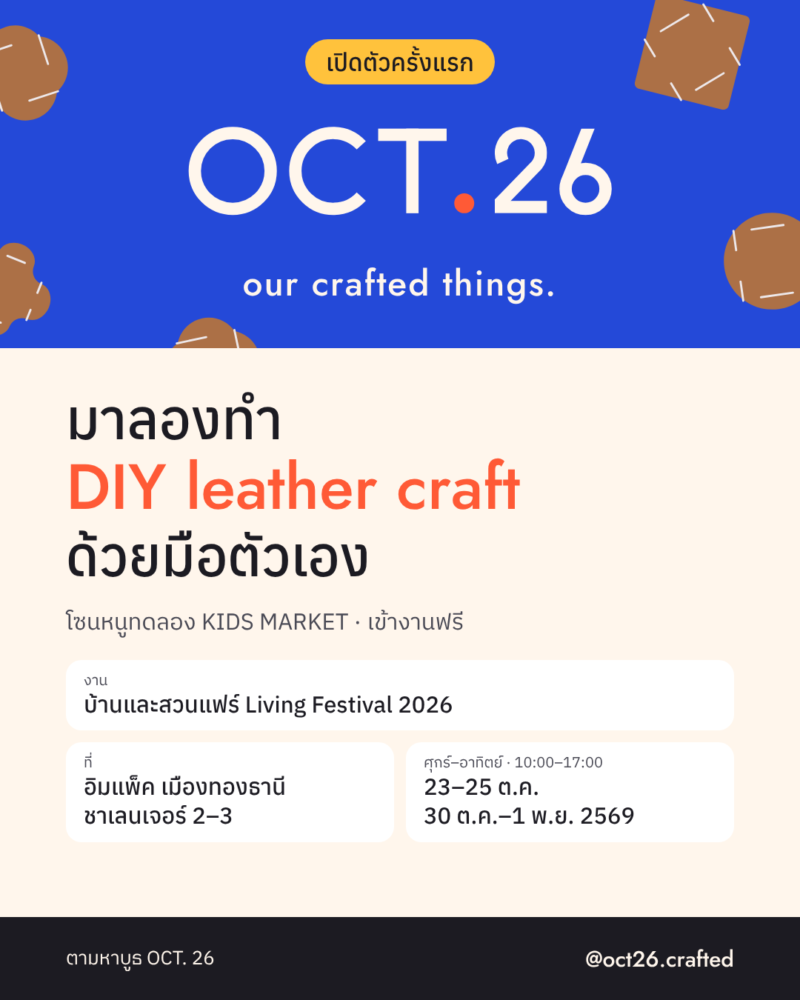
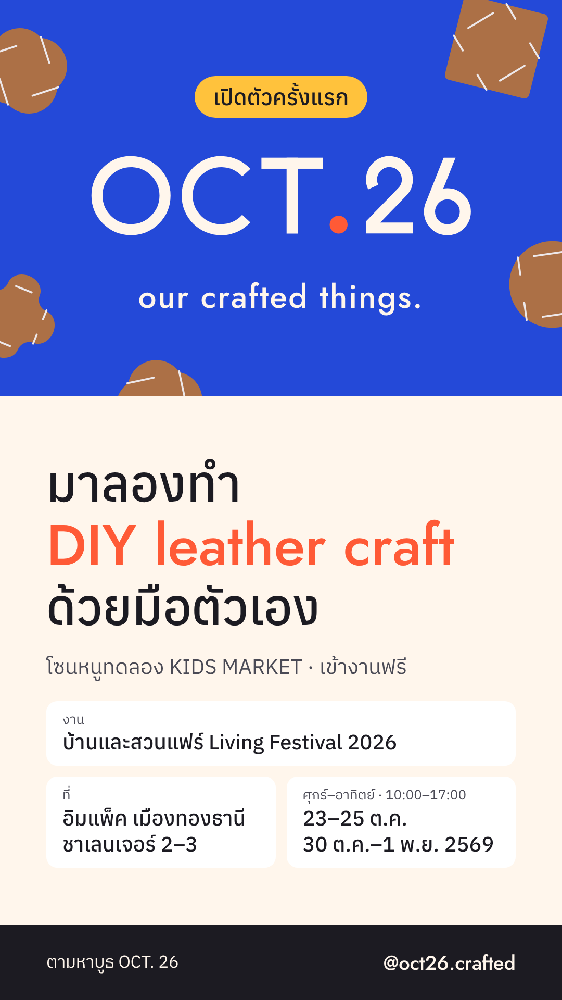
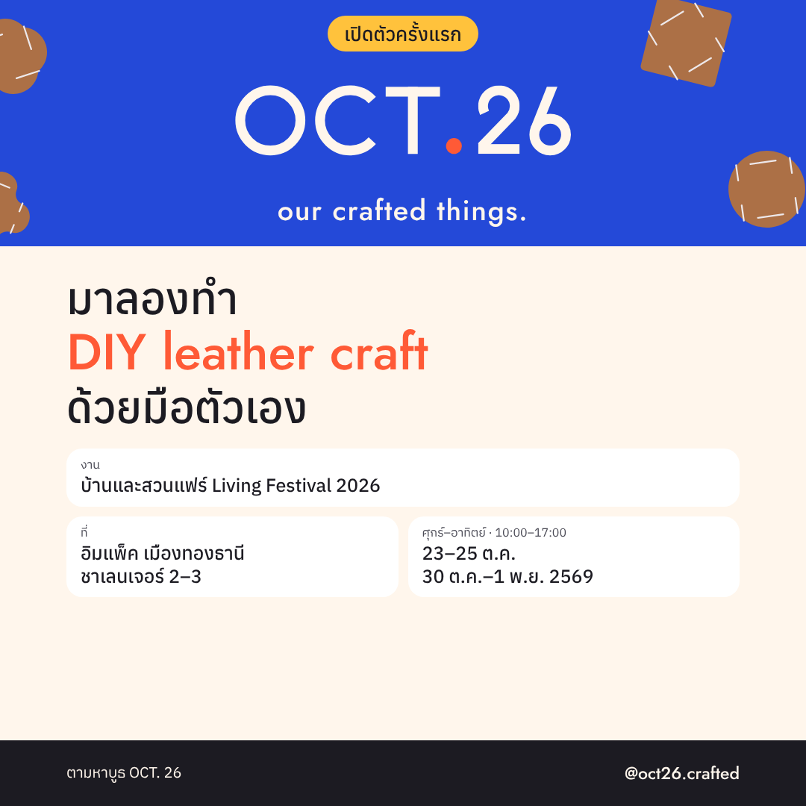

แบนเนอร์เปิดตัวสามขนาด คำเชิญชวนสำหรับ Facebook, Instagram และ YouTube และแคปชันกับวิธีถ่ายคลิปสาธิตคืนนี้ ทุกชิ้นพูดเรื่องเดียว: ที่บูธมี DIY leather craft ให้ลองทำ ยังไม่พูดถึงสินค้าหรือราคา



ไฟล์ PNG อยู่ที่ social-20261021/banners · ชื่องาน ที่ และเวลา จากโพสต์ของผู้จัด 21 ต.ค. · ไม่ใช้โลโก้ของผู้จัด ใช้แค่ชื่องาน และแท็กเพจผู้จัดตอนโพสต์
OCT. 26 เปิดตัวครั้งแรกที่บ้านและสวนแฟร์ Living Festival 2026 ในโซนหนูทดลอง KIDS MARKET ที่บูธเรามี DIY leather craft ให้ลองทำด้วยมือตัวเอง หยิบเศษหนังแท้ที่เหลือจากการผลิตโซฟา มาต่อเป็นชิ้นงาน ราว 5 นาทีก็เสร็จ เด็กทำได้ ผู้ใหญ่ก็สนุก ลูก ๆ อยู่ที่บูธ คอยสอนทีละขั้น ตามหาบูธ OCT. 26 ในโซนหนูทดลอง KIDS MARKET แล้วแวะมาลองกันนะ บ้านและสวนแฟร์ Living Festival 2026 อิมแพ็ค เมืองทองธานี ชาเลนเจอร์ 2–3 23–25 ต.ค. และ 30 ต.ค.–1 พ.ย. 2569 ศุกร์–อาทิตย์ 10:00–17:00 · เข้างานฟรี OCT. 26 · our crafted things. ของที่เราทำกันเอง #OCT26 #ourcraftedthings #หนูทดลองKidsMarket #บ้านและสวนแฟร์ #บ้านและสวนแฟร์2026 #LivingFestival2026 #DIY #leathercraft #งานแฮนด์เมด
เปิดตัวครั้งแรก บ้านและสวนแฟร์ Living Festival 2026 มาลอง DIY leather craft ที่บูธ OCT. 26 โซนหนูทดลอง KIDS MARKET ต่อเศษหนังแท้ด้วยมือตัวเอง ราว 5 นาทีเสร็จ ลูก ๆ รอสอนอยู่ บ้านและสวนแฟร์ Living Festival 2026 อิมแพ็ค เมืองทองธานี ชาเลนเจอร์ 2–3 23–25 ต.ค. และ 30 ต.ค.–1 พ.ย. 2569 ศุกร์–อาทิตย์ 10:00–17:00 · เข้างานฟรี our crafted things. ของที่เราทำกันเอง #OCT26 #ourcraftedthings #หนูทดลองKidsMarket #บ้านและสวนแฟร์ #บ้านและสวนแฟร์2026 #LivingFestival2026 #DIY #leathercraft #งานแฮนด์เมด #handmade #workshop
หน้า 1: แบนเนอร์ story หน้า 2: คลิปมือต่อหนัง + ข้อความ: มาลองต่อหนังแท้ด้วยมือ หน้า 3: ข้อความ: ตามหาบูธ OCT. 26 ในโซนหนูทดลอง KIDS MARKET · อิมแพ็ค เมืองทองธานี ชาเลนเจอร์ 2–3 · 23–25 ต.ค. และ 30 ต.ค.–1 พ.ย. 2569 + สติกเกอร์นับถอยหลังตั้งเวลา 23 ต.ค. 10:00 + แท็กเพจผู้จัด
OCT. 26 เปิดตัวครั้งแรกที่บ้านและสวนแฟร์ Living Festival 2026 โซนหนูทดลอง KIDS MARKET มี DIY leather craft ให้ลองต่อเศษหนังแท้ด้วยมือตัวเองที่บูธ ลูก ๆ จะอยู่สอน อิมแพ็ค เมืองทองธานี ชาเลนเจอร์ 2–3 · 23–25 ต.ค. และ 30 ต.ค.–1 พ.ย. 2569 · ศุกร์–อาทิตย์ 10:00–17:00 ช่องนี้จะลงคลิปเบื้องหลังวันออกบูธ ติดตามไว้ได้เลย
| ช่วง | ภาพ | ข้อความหรือเสียง |
|---|---|---|
| 0–2 วิ | เปิดด้วยชิ้นหนังที่ยังไม่ต่อ วางบนผ้าลินินสีครีม มือเด็กหยิบขึ้นมา | ข้อความบนจอ: มาลองต่อหนังแท้ด้วยมือ |
| 2–10 วิ | ถ่ายมือจากด้านบน ต่อทีละขั้น ช้า ๆ ให้เห็นทุกจังหวะ | ไม่ต้องพูด ใช้เสียงจริงตอนหนังเข้าล็อก |
| 10–13 วิ | ชูชิ้นที่ต่อเสร็จ ดึงให้ดูว่าแน่น | |
| 13–15 วิ | ภาพนิ่งชิ้นงานบนผ้า | ข้อความบนจอ: บ้านและสวนแฟร์ · โซนหนูทดลอง KIDS MARKET · 23–25 ต.ค. และ 30 ต.ค.–1 พ.ย. 2569 |
ลูก ๆ ต่อเศษหนังแท้ด้วยมือ | OCT. 26 DIY leather craft #Shorts
ลูก ๆ สาธิตการต่อเศษหนังแท้เข้าด้วยกันด้วยมือ มาลองต่อเองได้ที่บูธ OCT. 26 โซนหนูทดลอง KIDS MARKET บ้านและสวนแฟร์ Living Festival 2026 อิมแพ็ค เมืองทองธานี ชาเลนเจอร์ 2–3 23–25 ต.ค. และ 30 ต.ค.–1 พ.ย. 2569 ศุกร์–อาทิตย์ 10:00–17:00 · เข้างานฟรี OCT. 26 · our crafted things. ของที่เราทำกันเอง ติดตาม @oct26.crafted ได้ทุกช่องทาง #OCT26 #ourcraftedthings #หนูทดลองKidsMarket #บ้านและสวนแฟร์ #บ้านและสวนแฟร์2026 #LivingFestival2026 #DIY #leathercraft #งานแฮนด์เมด
ต่อหนังแท้ด้วยมือ ทีละชิ้น มาลองเองได้ที่บูธ OCT. 26 โซนหนูทดลอง KIDS MARKET บ้านและสวนแฟร์ Living Festival 2026 · อิมแพ็ค เมืองทองธานี ชาเลนเจอร์ 2–3 · 23–25 ต.ค. และ 30 ต.ค.–1 พ.ย. 2569 #OCT26 #ourcraftedthings #หนูทดลองKidsMarket #บ้านและสวนแฟร์ #บ้านและสวนแฟร์2026 #LivingFestival2026 #DIY #leathercraft #งานแฮนด์เมด #reels
ลูกเราต่อเศษหนังแท้ด้วยมือ มาลองเองได้ที่บูธ OCT. 26 โซนหนูทดลอง KIDS MARKET บ้านและสวนแฟร์ Living Festival 2026 อิมแพ็ค เมืองทองธานี 23–25 ต.ค. และ 30 ต.ค.–1 พ.ย. 2569 #OCT26 #ourcraftedthings #หนูทดลองKidsMarket #บ้านและสวนแฟร์ #บ้านและสวนแฟร์2026 #LivingFestival2026 #DIY #leathercraft #งานแฮนด์เมด #DIYง่ายๆ
| social-20261021/build.py | ข้อความทุกช่องทางและแบนเนอร์ แก้ที่นี่แล้วรันใหม่ |
| social-20261021/banners/*.png | แบนเนอร์สามขนาด |
| social-20261021/site/index.html | หน้านี้ |